开始之前
先说清楚整件事是怎么连起来的，后面的每一步就不会变成「照着点但不知道在干嘛」。
桌宠本身已经能聊天了 —— 前提是你在它的「开始」设置里接好了 AI 模型。如果这一步还没做，先去把模型配好，再回来看这篇。
要让桌宠收发 QQ 消息，中间得有个「中间人」：NapCatQQ。它负责登录一个 QQ 号、收发消息，再把消息转交给桌宠。所以你其实是在装两个东西：
- NapCatQQ：替你挂着一个 QQ，负责跟 QQ 服务器打交道。
- 桌宠的 QQ 扩展：负责跟 NapCatQQ 对接，把消息变成桌宠能理解的话。
整篇教程需要你能正常访问 GitHub（下载 NapCatQQ 和 Node.js 都要从这里拿）。下面每一步都配了截图，照着点就行。
安装中间协议层 NapCatQQ
这一步只做两件事：把 NapCatQQ 装上，把它的两个组件备齐。
下载并安装 NapCatQQ-Desktop
打开项目的 GitHub 页面，下载安装包并完成安装：
github.com/NapNeko/NapCatQQ-Desktop
GitHub 页面里有完整的使用指南。下面只讲 Windows 上最关键的那几步。
在「组件管理」里装上 SnowLuma 和 Node.js
打开 NapCatQQ-Desktop，进入左侧的「组件管理」：
- 在「协议端」分组里找到 SnowLuma，点安装。
- 再到页面底部下载安装 Node.js。
- 如果你的电脑上已经装过 Node.js，那就只需要装 SnowLuma。
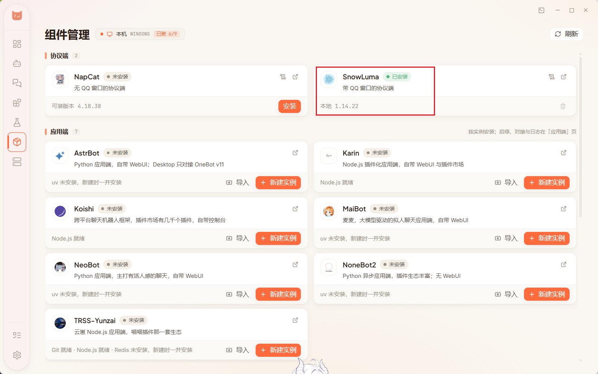
SnowLuma 和 NapCat 是同一件事的两种做法，作用完全一样：架一层协议，能收发 QQ 消息，也能把消息转给桌宠这样的下游程序。
区别只在于 —— SnowLuma 需要电脑上开着 QQ 客户端，NapCat 不需要。这篇教程走的是 SnowLuma 这条路。
建一个 Bot，把 QQ 连上
接下来在 NapCatQQ 里建一个「Bot」—— 你可以把它理解成「一个被托管的 QQ 账号」。
新建 Bot，填入 QQ 号
进入「Bot 管理」，新建一个 Bot，填上你要用来接入的 QQ 号。
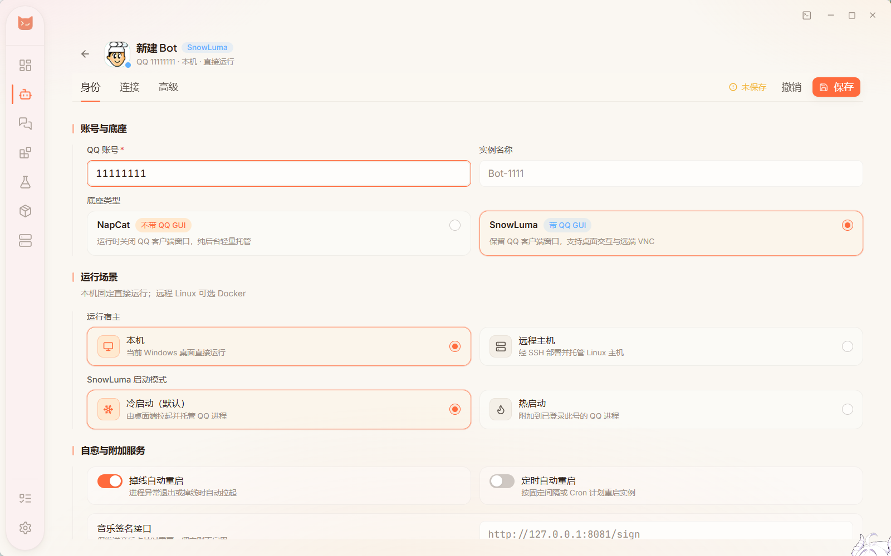
如果你想用自己的 QQ 和桌宠的 QQ 聊天，那就需要给桌宠用另一个 QQ 号。
把正向、反向两条连接都添加上
进入这个 Bot 的「连接」页面，底部有一排添加按钮，这里既有正向也有反向：
- 「+ WS 正向服务器」：NapCat 开个口子，等桌宠来连。
- 「+ WS 反向客户端」：NapCat 主动去连桌宠侧的服务。
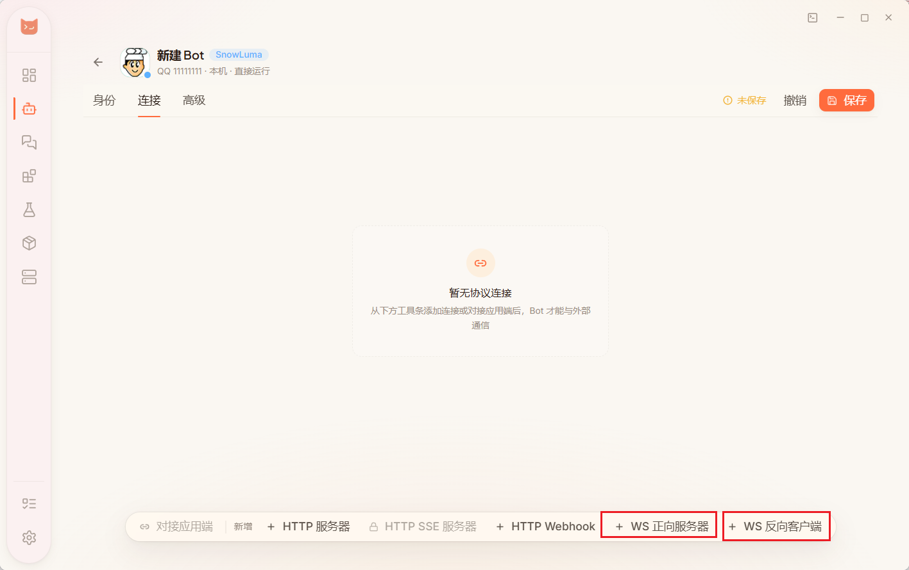
两条都要添加、都要设置。顺序无所谓，下面按正向 → 反向来讲。
设置正向服务器 —— 顺便把 Token 存下来
点「+ WS 正向服务器」，弹出的编辑窗里，监听 IP、端口这些用默认值就好。
唯一要动手的是底部的鉴权 Token：把它复制下来存到别处备用，后面在桌宠里要填的就是这一串。
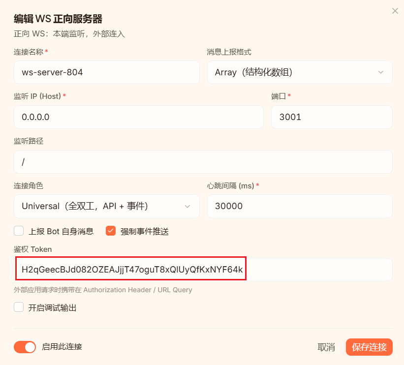
确认「启用此连接」是打开的，然后点右下角的「保存连接」。
3001，而桌宠默认就连 ws://127.0.0.1:3001 —— 两边正好对得上，所以一般不用改。设置反向客户端 —— 主要是填对地址
再点「+ WS 反向客户端」。这里最容易卡住的地方是：
- 服务端 WebSocket URL 的输入框是空的（虽然它下面给了默认地址的提示），需要你手动粘贴进去 ——
ws://127.0.0.1:8080/onebot/v11 - 其余项保持默认，然后同样点右下角的「保存连接」。
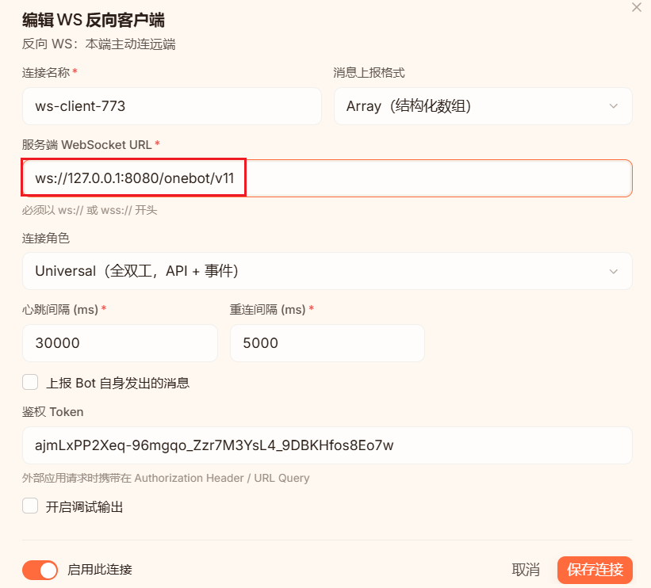
保存整个 Bot 的设置
正向、反向都设置好之后，点页面右上角的「保存」。看到「未保存」的提示消失，就说明存上了。
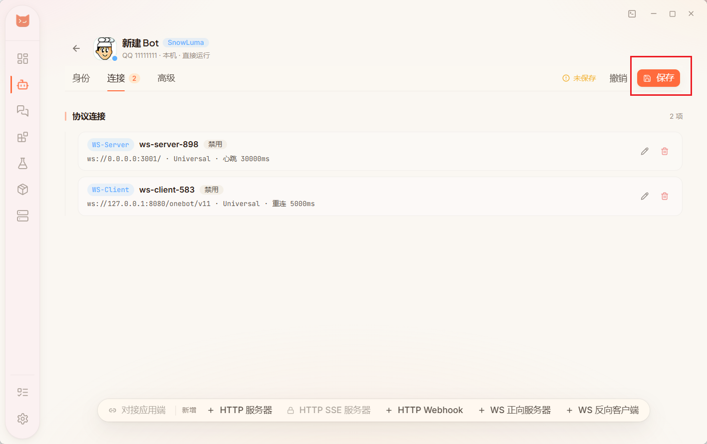
启动 Bot
回到 Bot 列表，点击这个 Bot 的「启动」。
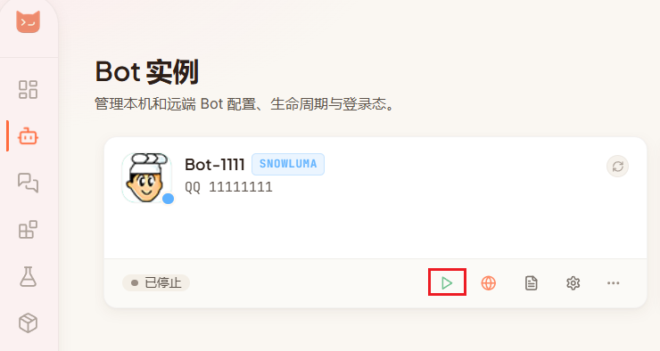
登录 QQ，然后验证一下
启动后会弹出 QQ 的登录界面，登录你在这个 Bot 里填的那个账号即可。
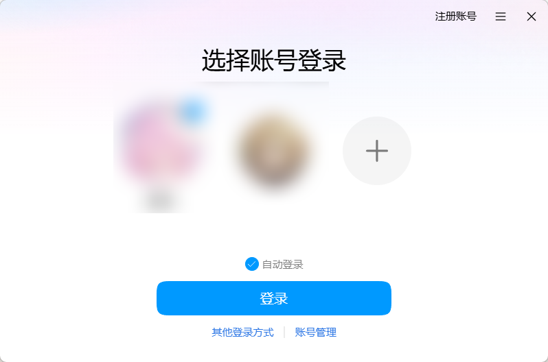
登录之后先测一下协议层通不通：用这个 QQ 给朋友或群里发条消息（也可以让别人给它发），然后点 NapCatQQ 左侧的聊天窗口，看看消息有没有出现在列表里。
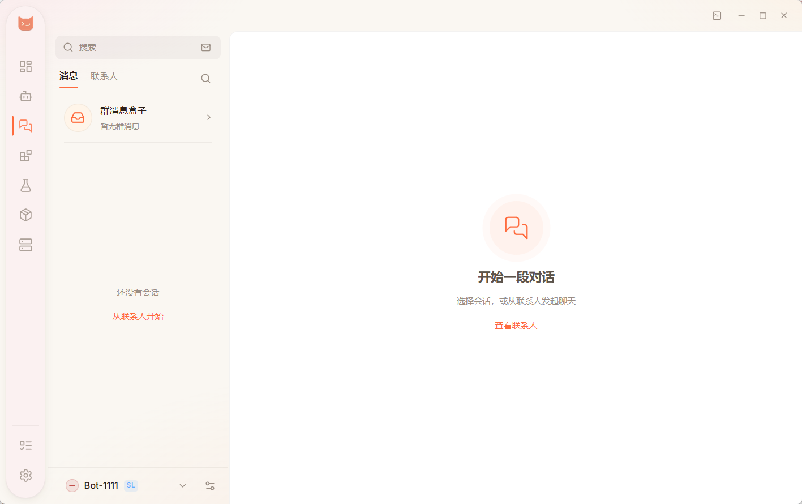
在桌宠里接入 QQ
协议层已经在跑了，现在把桌宠接上去。这一章装的是 QQ Final 扩展，全部设置都在桌宠里完成。
安装 QQ Final 扩展
- 点左下角打开「高级模式」。
- 进入「扩展」页面，在「扩展市场」的搜索框里输入
qq-final。 - 找到
cortico-world-qq-final卡片点安装（旁边的-final-beta是尝鲜版，功能更新但可能不够稳，按需选）。
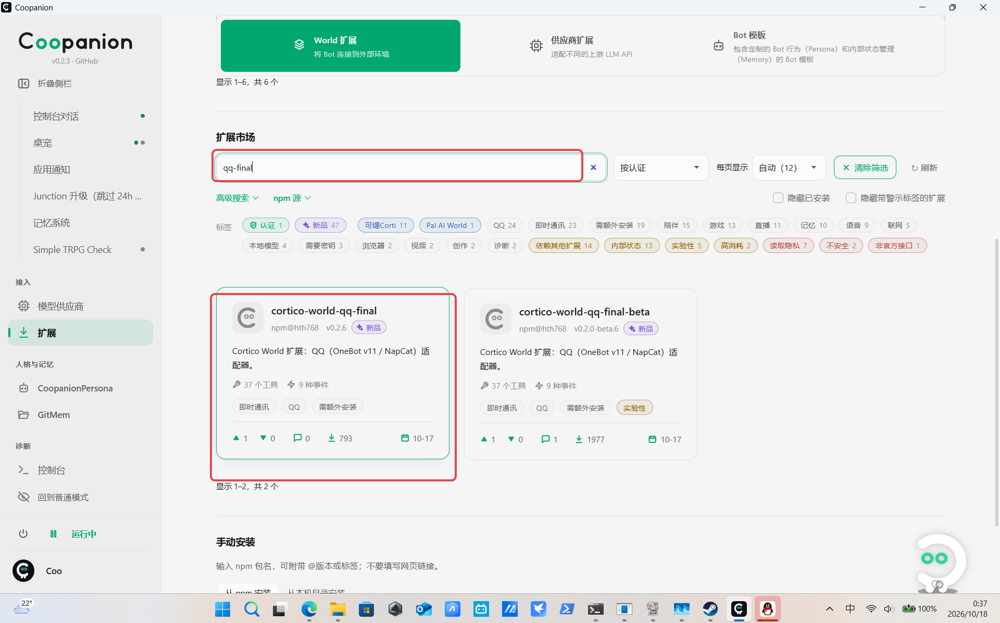
确认装好了
回到「已安装」列表，能看到 cortico-world-qq-final 卡片。右下角显示「待重启」是正常的——扩展要等进程重启后才真正加载。
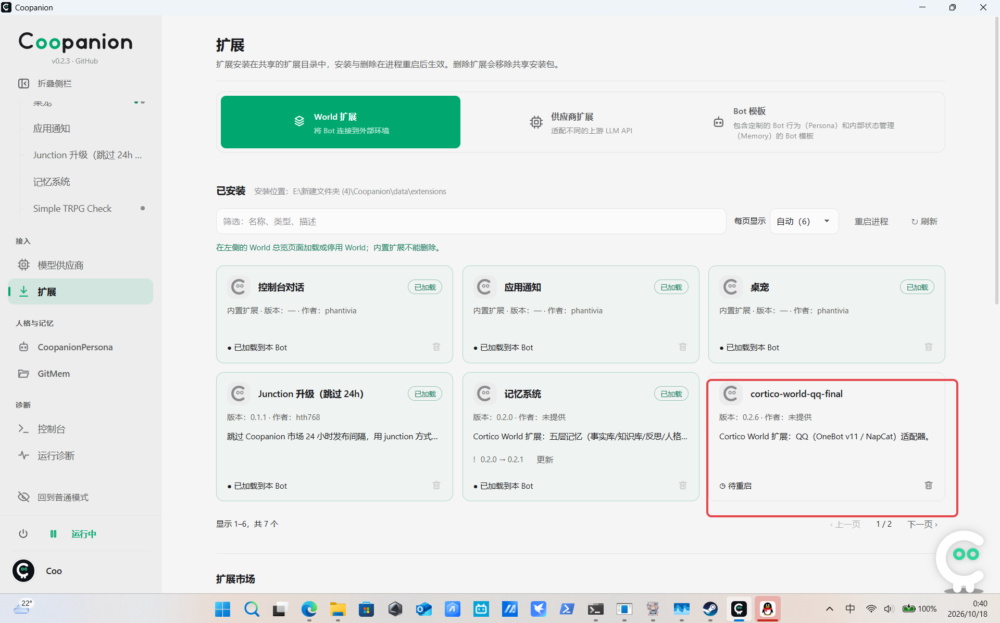
重启进程，让扩展加载
在「扩展」页面点右上角的「重启进程」（或直接完全退出桌宠再打开）。
重启后到「World 总览」，能看到 QQ 群聊 这张卡片，说明扩展已经加载成功。
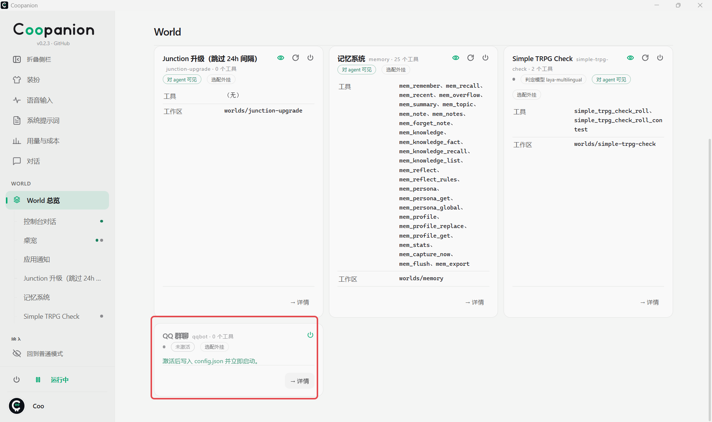
配置连接（默认反向，不用填 Token）
点左侧「QQ 群聊」进入面板，默认停在「连接与监听」这一页。按下图红框核对三处：
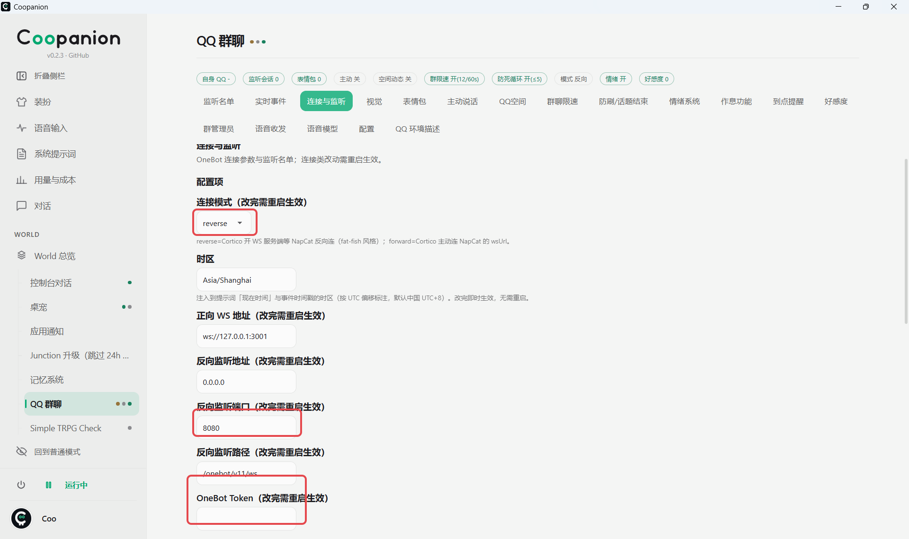
- 连接模式保持
reverse（反向），这是默认值，不用改。 - 反向监听端口要和 NapCat 里「设置反向客户端」填的端口一致（默认
8080）；反向监听路径默认/onebot/v11/ws，也要和 NapCat 一致。 - OneBot Token：反向连接留空。只有切成
forward（正向）时，才填 NapCat「设置正向服务器」里那个 Token。
设置监听名单
桌宠默认不监听任何群聊或私聊。想让她管哪些会话，就把群号、私聊的 QQ 号填进「监听群」和「监听私聊」——用空格或逗号分隔。
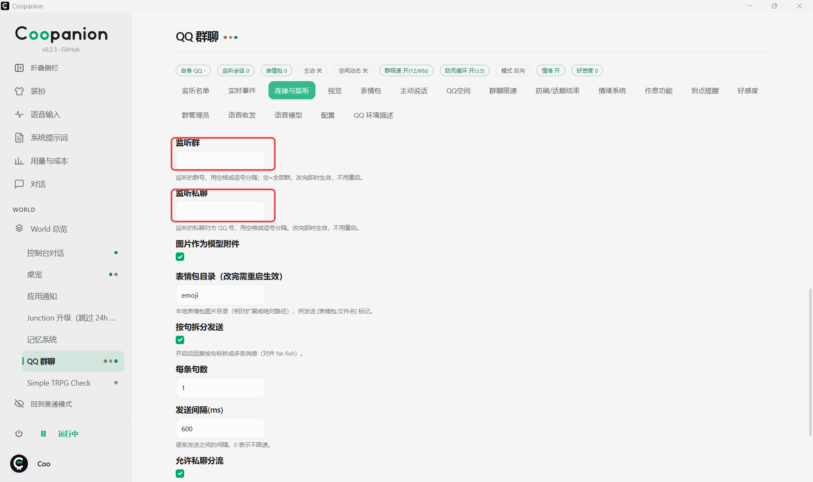
填完就可以试了：给桌宠的 QQ 发一条私聊，她应该会回复你。如果监听了群消息，她可能也会自动回群里的消息。
修改提示词 建议做
提示词决定了她「看到消息之后怎么想、怎么回」。在「QQ 环境描述」面板里按自己的习惯改一改，比如告诉桌宠：
- 默认不需要识图；
- 不必每条消息都回，只在被叫到的时候回；
- 不要执行危险命令；
- 监控到特定关键词或场景时，执行某个动作。
改完记得保存。提示词不会立刻生效，回到「World 总览」点右上角的「重载系统前缀」，或者干脆重启进程。
检查清单
不通的时候回头对一遍，八成能一眼看出卡在哪。勾选状态会记在这台电脑上。
※ 如果换号、重装 NapCatQQ，Token 会重新生成，需要回到第 12 步重填一次。
常见问题
几个最容易踩的坑，先对照看看。
桌宠里一直显示「未连接」怎么办？
按这个顺序查：
- NapCatQQ 里的 Bot 是不是还在运行、QQ 是不是还登着？
- 正向服务器有没有打开「启用此连接」、有没有点过「保存连接」，最后有没有点右上角的「保存」？
- Token 用的是正向服务器那个吗？完整复制了吗？前后多一个空格都会连不上。
- 桌宠里的 WS 地址和 NapCat 里的端口是否一致（默认
3001）。
连接显示成功，但收不到消息 / 她不回话？
十有八九是监听名单是空的。桌宠默认不监听任何会话，必须把群号或私聊 QQ 号填进去。
另外：如果只是 NapCatQQ 的聊天窗口看不到消息，那是显示延迟，不影响实际收发。
正向和反向两个都要设置吗？
按教程都设置上最省事。它们只是「谁主动连谁」的方向不同：
- 正向 WS 服务器：NapCat 开门等别人来连。桌宠连的就是这里（默认
3001端口），Token 也从这里拿。 - 反向 WS 客户端：NapCat 主动去连别人（教程里配的是
8080）。
两个都开着，以后换别的下游程序也能直接用。
两个「保存」按钮有什么区别？
弹窗里的是「保存连接」，只保存当前这一条连接的配置；页面右上角的是「保存」，保存整个 Bot 的全部设置。
所以顺序是：先给每条连接点「保存连接」，全部配完再点一次右上角的「保存」。
改了提示词，桌宠的表现完全没变？
提示词改完需要「重载系统前缀」才会生效。在 World 总览右上角，或者干脆重启一次桌宠。
Token 弄丢 / 想换一个怎么办？
回到 NapCatQQ 里那个 Bot 的「连接」页面，打开正向 WS 服务器的配置，重新生成或复制 Token，再到桌宠里重填、保存并重启。